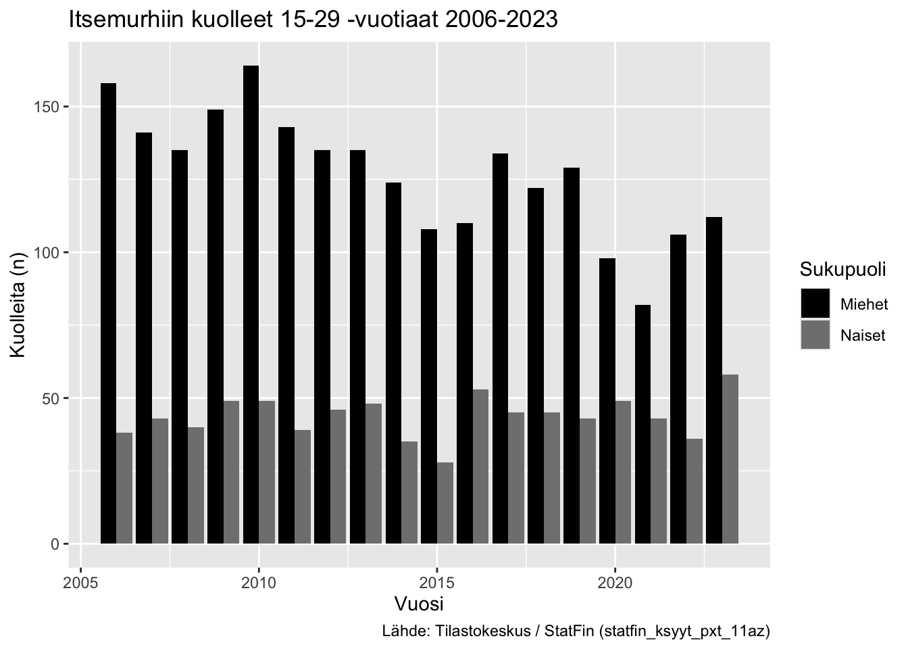
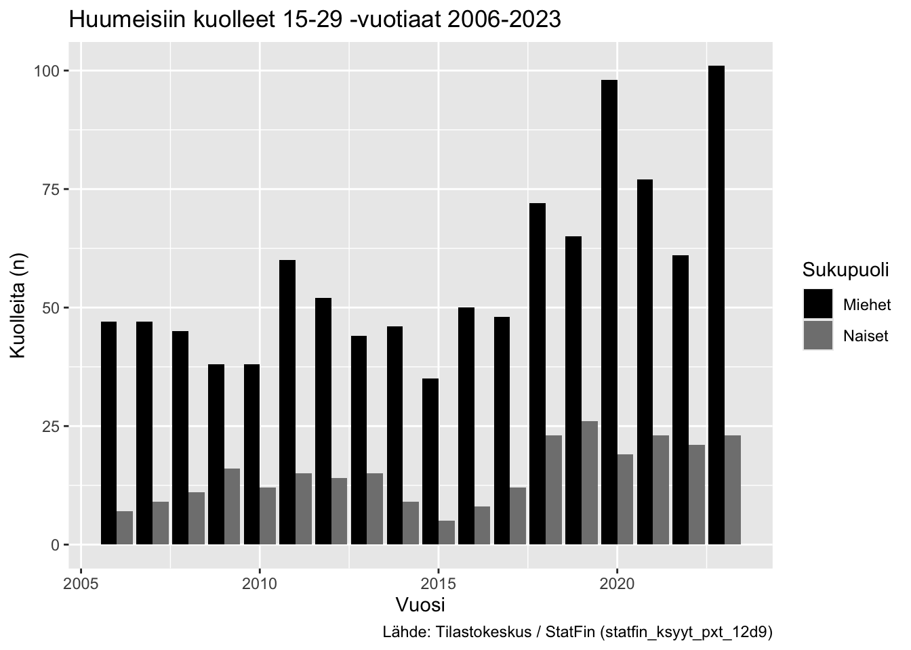
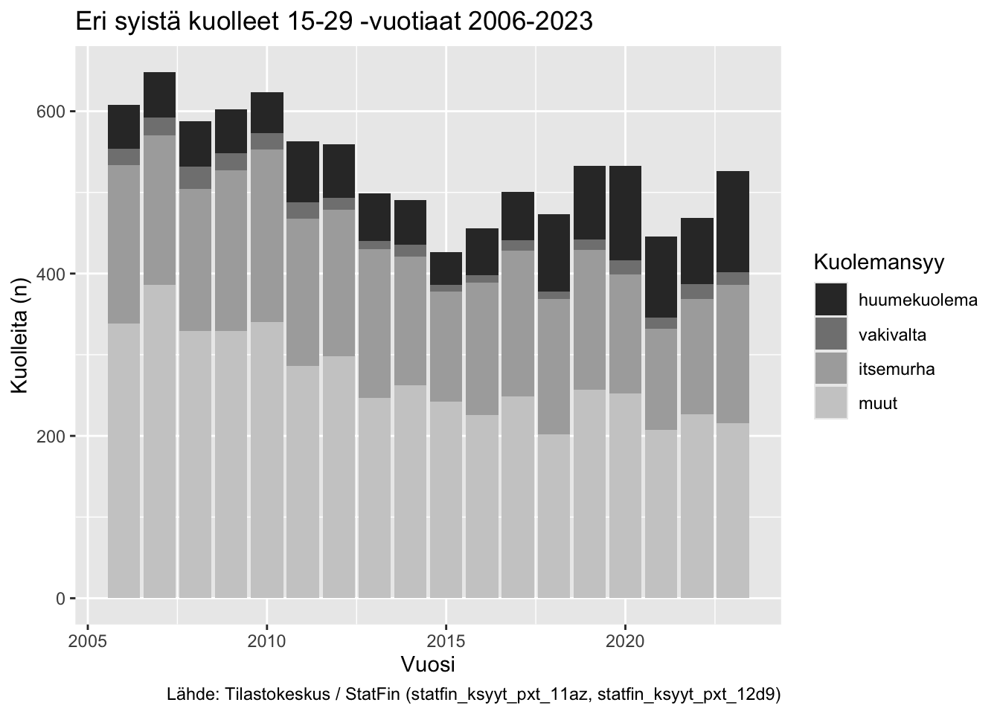

Tilastotietojen lataamisessa Tilastokeskuksen StatFin-tietokannasta käytetään pxweb-pakettia. Paketti mahdollistaa hakujen tekemisen tekstipohjaisesta käyttöliittymästä, jolloin haut ovat tallennettavissa, helposti toistettavissa ja muokattavissa suoraan R:stä. pxweb-paketti toimii monien eri pxweb-tietokantojen kanssa eri maissa. pxweb-paketti on kehitetty osana rOpenGov -pakettiekosysteemiä.
Datan käsittelyyn (data wrangling) käytetään tidyverseen kuuluvia ggplot2-, dplyr- ja tidyr-paketteja.
Datasettien nimien siivoamiseen käytetään janitor-pakettia.
Kuvien yhdistämiseksi paneelikuviksi hyödynnetään patchwork-pakettia.
Tilastokeskuksen Keskiväkiluku-aineistosta saadaan tietoja vain vuoteen 1981 asti. Tästä johtuen myöhemmin tässä työkirjassa käytetään itse laskettua keskiväkilukua.
Tilastokeskuksen määritelmän mukaan:
Tietyn vuoden keskiväkiluku on kahden peräkkäisen vuoden väkilukujen keskiarvo. Kun tilastovuodelle lasketaan jotakin ilmiöta kuvaava suhdeluku, yleensä ko. ilmiön tapahtumien määrä suhteutetaan juuri tapahtumalle alttiina olevan väestön tai väestön osan keskiväkilukuun. Nämä väestöllisiä ilmiöitä kuvaavat luvut ilmoitetaan yleensä promilleina eli em. jakolaskun tulos kerrotaan tuhannella.
Eli vuoden 2024 keskiväkiluku saadaan laskemalla yhteen vuoden 2024 väkiluku ja vuoden 2023 väkiluku ja jakamalla tämä kahdella.
Muodostetaan 15-29 -vuotiaiden ryhmä. Hyödynnetään dplyr-paketista löytyviä window function -funktioita eli lag-funktiota, saadaan valittua jokaiselle vuodelle sitä seuraavan vuoden luku (taulukko on järjestetty nousevaan järjestykseen eli ensimmäisenä on vanhin vuosi ja viimeisenä uusin vuosi, 2024).
janitor-paketin clean_names()-funktiolla muutetaan suomenkieliset muuttujanimet helpommin käsiteltäviksi ASCII-nimiksi, joissa poistetaan isot kirjaimet, välilyönnit korvataan _-merkillä, ääkköset poistetaan ym.
Muodostetaan uusi muuttuja “kuolemansyy” jota voidaan käyttää eri kuolemansyiden lukujen ryhmittelyyn visualisoinneissa.
Muutetaan ika-muuttujan character-arvot faktoreiksi, jolloin voidaan määritellä manuaalisesti niiden järjestys. Normaalisti muuttujat visualisoitaisiin aakkosjärjestyksessä (alfanumeerisessa järjestyksessä), jolloin numerot tulisivat ennen tekstimuuttujia. Haluamme kuitenkin tässä (?), että “Yhteensä” on ennen numeroita.
Tässä visualisoinnissa esitetään erikseen eri kuolinsyiden Yhteensä-määrä ja erilliset kuolinsyyt omina palkkeinaan.
Hyödyntämällä patchwork-kirjastoa saamme yhdistettyä useita kuvioita yhteen.
Hyödyntämällä patchwork-kirjastoa saamme yhdistettyä useita kuvioita yhteen.

Tässä visualisoinnissa YD-kuolemien kokonaismäärä näkyy pinoamalla erilliset kuolinsyyt yhdeksi palkiksi.





# A tibble: 18 × 9
# Rowwise:
vuosi itsem_m itsem_n huume_m huume_n vakiv_m vakiv_n yht_m yht_n
<chr> <dbl> <dbl> <dbl> <dbl> <dbl> <dbl> <dbl> <dbl>
1 2006 158 38 47 7 16 4 221 49
2 2007 141 43 47 9 11 11 199 63
3 2008 135 40 45 11 17 11 197 62
4 2009 149 49 38 16 14 7 201 72
5 2010 164 49 38 12 15 5 217 66
6 2011 143 39 60 15 14 6 217 60
7 2012 135 46 52 14 9 5 196 65
8 2013 135 48 44 15 6 4 185 67
9 2014 124 35 46 9 10 5 180 49
10 2015 108 28 35 5 5 3 148 36
11 2016 110 53 50 8 8 1 168 62
12 2017 134 45 48 12 6 7 188 64
13 2018 122 45 72 23 5 4 199 72
14 2019 129 43 65 26 9 4 203 73
15 2020 98 49 98 19 14 3 210 71
16 2021 82 43 77 23 11 3 170 69
17 2022 106 36 61 21 10 8 177 65
18 2023 112 58 101 23 9 7 222 88
Verrattuna aiempiin vaiheisiin, tässä on pudotettu pois vuoden perusteella filtteröinti. Toisin sanottuna mukaan otetaan kaikki havainnot aineiston alkupisteestä asti. Huumekuolemat-aineisto alkaa vasta vuodesta 2006.

Ikäryhmittäinen kuolleisuusluku (Age Specific Death Rate, ASDR) vastaa ikäryhmittäistä hedelmällisyyslukua niin hyvien kuin huonenkin ominaisuuksiensa osalta. Se on täsmällinen mittaluku, mutta se pilkkoo tiedon kuolleisuudesta niin moneen pieneen palaseen, että kokonaiskuvaa on vaikea saada. Esimerkiksi 25-29-vuotiaille ikäryhmittäinen kuolleisuusluku lasketaan seuraavanlaisessa kaavalla:
\[ ASDR = \frac{\text{25-29 vuotiaana kuolleet vuonna A}}{\text{25-29-vuotiaiden keskiväkiluku vuonna A}} \times 1000 \]
(Suomen väestö -teos)
Kategorisoidaan ensin 1 ikävuoden välein otetut keskiväkiluvut aiemmin käytettyihin kategorioihin 15 - 19, 20 - 24 ja 25-29.
Lasketaan sitten kuolleiden määrän ja keskiväkiluvun suhteesta saatava ASDR.
Ongelmallista ylemmässä on se, että keskiväkiluvut ulottuvat vain vuoteen 1981 asti. Käytetään siis itse laskettua keskiväkilukua.

Kindly cite the pxweb R package as follows:
Kindly cite the 'pxweb' R package as follows:
Magnusson M, Kainu M, Huovari J, Lahti L (2025). _pxweb: R Interface
to PXWEB APIs_. doi:10.32614/CRAN.package.pxweb
<https://doi.org/10.32614/CRAN.package.pxweb>, R package version
0.17.1, <https://github.com/rOpenGov/pxweb>.To cite ggplot2 in publications, please use
H. Wickham. ggplot2: Elegant Graphics for Data Analysis.
Springer-Verlag New York, 2016.To cite package 'dplyr' in publications use:
Wickham H, François R, Henry L, Müller K, Vaughan D (2023). _dplyr: A
Grammar of Data Manipulation_. doi:10.32614/CRAN.package.dplyr
<https://doi.org/10.32614/CRAN.package.dplyr>, R package version
1.1.4, <https://CRAN.R-project.org/package=dplyr>.To cite package 'tidyr' in publications use:
Wickham H, Vaughan D, Girlich M (2024). _tidyr: Tidy Messy Data_.
doi:10.32614/CRAN.package.tidyr
<https://doi.org/10.32614/CRAN.package.tidyr>, R package version
1.3.1, <https://CRAN.R-project.org/package=tidyr>.To cite package 'janitor' in publications use:
Firke S (2024). _janitor: Simple Tools for Examining and Cleaning
Dirty Data_. doi:10.32614/CRAN.package.janitor
<https://doi.org/10.32614/CRAN.package.janitor>, R package version
2.2.1, <https://CRAN.R-project.org/package=janitor>.To cite package 'patchwork' in publications use:
Pedersen T (2025). _patchwork: The Composer of Plots_.
doi:10.32614/CRAN.package.patchwork
<https://doi.org/10.32614/CRAN.package.patchwork>, R package version
1.3.2, <https://CRAN.R-project.org/package=patchwork>.Tällä varmistetaan se, että tieto pakettien versioista tulee kirjattua johonkin.
R version 4.5.1 (2025-06-13)
Platform: aarch64-apple-darwin20
Running under: macOS Tahoe 26.0.1
Matrix products: default
BLAS: /Library/Frameworks/R.framework/Versions/4.5-arm64/Resources/lib/libRblas.0.dylib
LAPACK: /Library/Frameworks/R.framework/Versions/4.5-arm64/Resources/lib/libRlapack.dylib; LAPACK version 3.12.1
locale:
[1] en_US.UTF-8/en_US.UTF-8/en_US.UTF-8/C/en_US.UTF-8/en_US.UTF-8
time zone: Europe/Helsinki
tzcode source: internal
attached base packages:
[1] stats graphics grDevices utils datasets methods base
other attached packages:
[1] patchwork_1.3.2 janitor_2.2.1 tidyr_1.3.1 dplyr_1.1.4
[5] ggplot2_3.5.2 pxweb_0.17.1
loaded via a namespace (and not attached):
[1] gtable_0.3.6 jsonlite_2.0.0 compiler_4.5.1 tidyselect_1.2.1
[5] xml2_1.4.0 stringr_1.5.1 snakecase_0.11.1 scales_1.4.0
[9] yaml_2.3.10 fastmap_1.2.0 R6_2.6.1 labeling_0.4.3
[13] generics_0.1.4 curl_7.0.0 knitr_1.50 backports_1.5.0
[17] htmlwidgets_1.6.4 checkmate_2.3.3 tibble_3.3.0 lubridate_1.9.4
[21] pillar_1.11.0 RColorBrewer_1.1-3 rlang_1.1.6 utf8_1.2.6
[25] stringi_1.8.7 xfun_0.53 timechange_0.3.0 cli_3.6.5
[29] withr_3.0.2 magrittr_2.0.3 digest_0.6.37 grid_4.5.1
[33] rstudioapi_0.17.1 lifecycle_1.0.4 vctrs_0.6.5 evaluate_1.0.5
[37] glue_1.8.0 farver_2.1.2 httr_1.4.7 rmarkdown_2.29
[41] purrr_1.1.0 tools_4.5.1 pkgconfig_2.0.3 htmltools_0.5.8.1